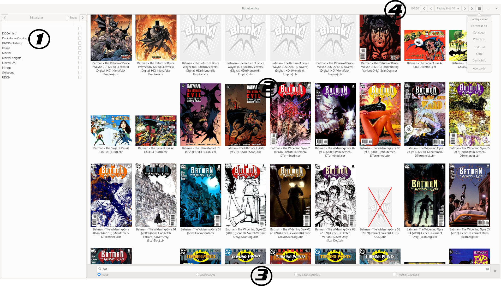

Ventana principal de Babelcomics. Esta ventana me permite visualizar todos los comics escaneados en las carpetas configuradas en la parte de configuración. Ademas de visualizar los comics, tembién se pueden filtrar ver los comics que estan catalogados, lanzar el proceso de catalogación.

Secciones
1
En esta sección se puede configurar varios filtros que impactan en los comics que podemos ver en la sección 2. Tener en cuenta que estos filtros hacen uso de la metadata que tienen los comics asociados. Un comic que no tenga metadata asociada va a quedar excluido de los filtros que el usuario podrìa llegar a configurar. Para mas detalle ver el proceso de catalogación. Tenemos tres criterios para filtrar:
En la parte superior de la sección hay dos botones. Uno que apunta a la derecha y otro a la izquierda. Estos botones permiten la navegación entre las tres opciones.